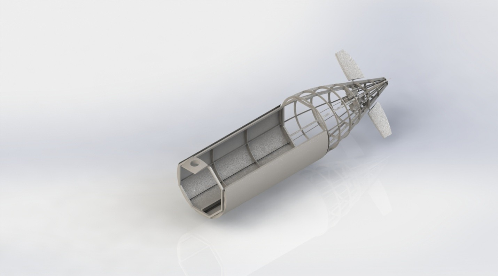
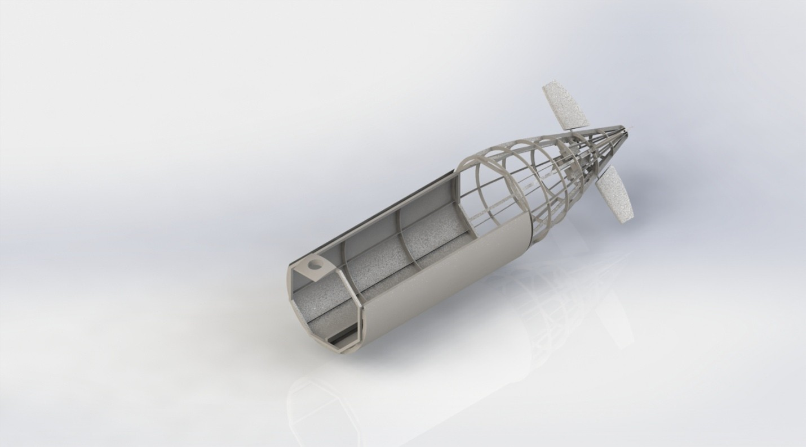

The Southampton University Human Powered Submarine Society is a student-run organization focused on building and racing submarines in competitions worldwide. Our members gain hands-on experience in marine engineering, robotics, and team collaboration.
We work with a wide range of individuals from across the university in a variety of different courses at different points in their degreees, from Postgraduate researchers to first year students, from a wide range of backgrounds and interests stretching throughout engineering and the University as a whole.
With over 10 years of submarine designing, building and racing under our built, this year we have gone for a new challenge; to create a submarine that can easily be assembled and dissambled for transport across long distances, creating new challenges in which we strive to solve
 


Interested in joining or learning more? Reach out to us!